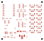
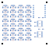

把 46 路接口排进更小的背盒。
64 × 60 mm、1.6 mm 厚、四层板。A 组 14 个接口位于正面，B、C 两组共 32 个接口位于反面。以下为当前 KiCad 原生布局导出的实际封装图。
布局评审稿 · 尚未布线，不能制板。
原理图 ERC 零问题；布局 DRC 零封装、间距及丝印问题，另有 356 条未连接记录。未连接记录没有被忽略或视为通过。
原理图 ERC 零问题；布局 DRC 零封装、间距及丝印问题，另有 356 条未连接记录。未连接记录没有被忽略或视为通过。


| 项目 | O22 | O23C 布局候选 |
|---|---|---|
| 板外形 | 80 × 94 mm | 64 × 60 mm，面积减少 48.9% |
| 传感器接口 | 46 个 SH 5P | 仍为 46 个，原编号和每个焊盘网络相同 |
| 安装 | 单面元件 | 双面元件，拆板后维护内侧接口 |
| 供电关系 | 外部稳压 5 V，经原供电电路 | 电路值与网络沿用；XIAO J2.7 的 5 V 仍悬空 |